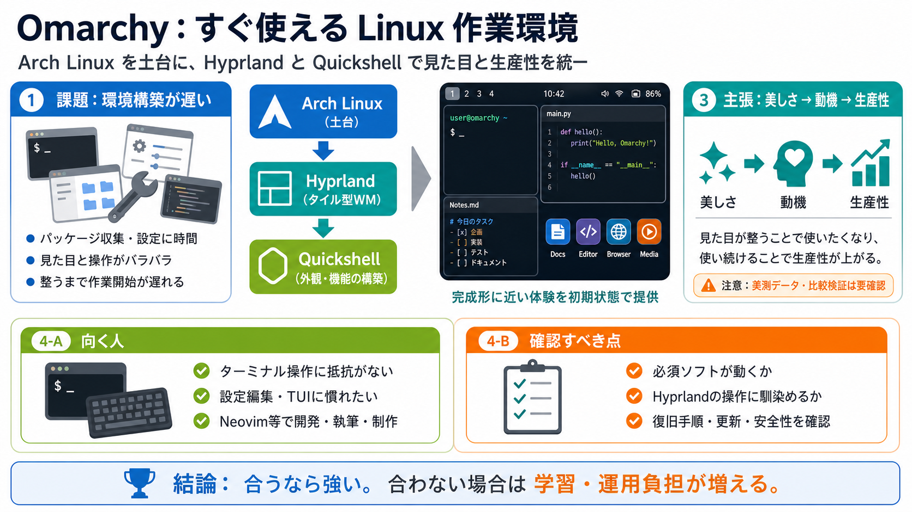

This One Command Turned My Arch Install Into a Beautiful Hyprland Setup
On a fresh Arch Linux installation, you have to ensure that you grab wget from the additional packages menu and skip any…

On a fresh Arch Linux installation, you have to ensure that you grab wget from the additional packages menu and skip any…
Visit and run the following script in your Terminal to start Asahi Alarm Installer: ``` | ``` Once inside the Asahi A…
| Hello, I really appreciate the work on Omarchy as a beautiful, modern, and opinionated Linux distribution based on Ar…
| I3 & XFCE question Help & Support xfce , window-managers , debian | 48 | 1642 | April 21, 2026 | | Would you consid…
# The Omarchy 3 Manual Preserved for legacy installations of Omarchy. Find Omarchy Quattro (v4) manual on omarchy.org. D…